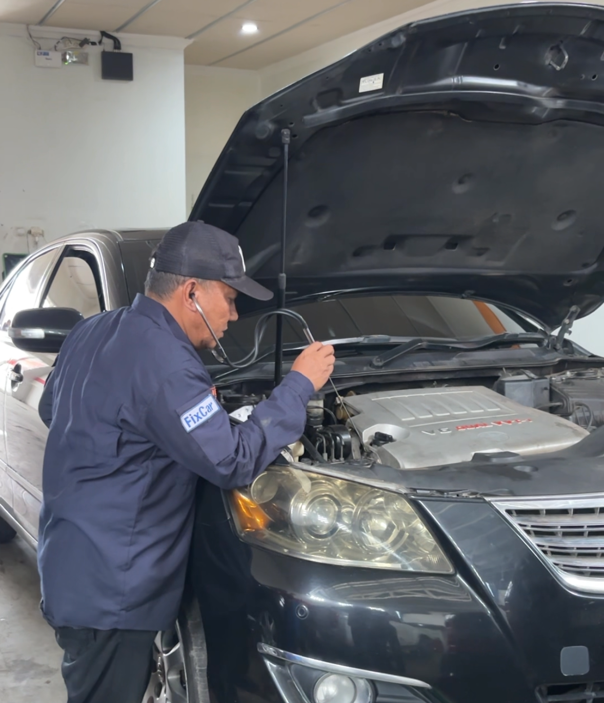

☰

Performa mobil menurun? Transmisi kasar? Kami siap bantu.
Matic Speed Shop adalah bengkel spesialis transmisi matic yang menghadirkan layanan profesional, transparan, dan terpercaya untuk menjaga performa kendaraan Anda tetap optimal.
Mekanik berpengalaman
Cek sebelum tindakan
Kualitas & tahan lama
Nyaman & awet
⭐ Dipercaya 1000+ pelanggan mobil matic
Kepuasan pelanggan adalah prioritas kami. Ini yang mereka katakan.